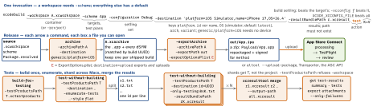

cicd · folio
In one line: xcodebuild runs one action of a scheme against a destination
and leaves files you can open — an .xcarchive, an .ipa, an .xcresult. simctl
drives simulators, devicectl phones; xcode-select / DEVELOPER_DIR pick which
Xcode answers.
Download PDF Print view LaTeX source


Build once, test anywhere
build-for-testing writes an .xctestrun: an editable plist of bundle paths, environment and arguments (Xcode 26+: even disabled plan configurations). Any Mac runs it with test-without-building — no source, no compiler. Tests are paths, -only-testing Target/Class/method; @file reads one a line; only beats skip.
Two repetition loops that point opposite ways
-test-iterations N: N runs, or either loop’s cap. -test-repetition-relaunch-enabled YES: a fresh process per run.
Parallel: the simulator you pick never runs a test
Clones carry the original’s name. Several -destinations each run the whole suite; -parallelize-tests-among-destinations splits it.
One prefix, stripped on the way in
simctl has no environment flag; the prefix is the interface. At boot it reaches the whole device — in a 2019 experiment, enough to give an iPhone 8 simulator Face ID.
The .xcresult: query it, never parse it
xcresulttool speaks JSON; help <command> prints the schema. Xcode 16 swapped its commands: get object needs --legacy, and parsers built on it broke.
What changed, Xcode 13 → 27
Exit codes: a 1980 mail header
xcodebuild exits by sysexits(3): sysexits.h, first shipped in 4BSD (1980), written for delivermail — sendmail’s predecessor — and the Berkeley network, starting at 64 “to reduce the possibility of clashing”. Logs after ** TEST FAILED ** show 65: branch on non-zero, never on a number.
Traps
xcodebuild … | xcbeautifywithoutset -o pipefail: the pipeline returns the formatter’s status — a red build reports green.- No
OS=islatest: a new runner image moves the iOS version. PinOS=orid=.
Export: method answers “who may install this?”
The 100 is per product family per membership year; disabling a device does not give the slot
back, only renewal does. manageAppVersionAndBuildNumber: Xcode rewrites every build number in the archive — off when CI owns it. testFlightInternalTestingOnly: never submittable. Manual signing: provisioningProfiles {bundle id → profile}.
Signing with nobody at the keyboard
-allowProvisioningUpdates lets xcodebuild make certificates and fetch profiles itself; an App Store Connect API key (key path, key ID, issuer ID) stands in for a logged-in account and also uploads. altool finds AuthKey_<id>.p8 in ./private_keys, ~/.appstoreconnect/private_keys and two more.
Swift packages, plugins, macros on CI
Package.resolvedis the lockfile: commit it;-disableAutomaticPackageResolutionmakes CI build exactly those versions.- Checkouts land in
DerivedData/SourcePackages;-clonedSourcePackagesDirPath Pmoves them somewhere a cache survives. -scmProvider system: the Mac’s own git, its config and SSH keys.- Nobody is there to click “Trust & Enable”:
-skipPackagePluginValidation,-skipMacroValidation— in the tool’s words, “can be a security risk”.
A simulator is a userspace, not a virtual machine
The iOS userspace — its own launchd, daemons and frameworks — runs on the Mac’s kernel, sharing its filesystem with a home of its own. CPU and memory limits are not simulated: on a Mac with a terabyte of RAM the “iPhone” can allocate a terabyte. Simulator timings say nothing about a phone.
What a phone will not let a script do, a simulator will: privacy … grant (no alert to tap), push an .apns file, keychain … add-root-cert (trust your proxy), status_bar … override --time 9:41. Why 9:41: Apple designed keynotes so the reveal lands about 40 minutes in and the screen matches the audience’s watches — the 2007 iPhone appeared at 9:41. Script with UDIDs; booted = the one booted device. Phones: devicectl (CoreDevice, iOS 17+), --device by name, UDID or ECID; parse --json-output, not text.
Which Xcode answers
xcrun --find T resolves without running; xcrun sets SDKROOT for what it starts. xcodes + .xcode-version pin the Xcode. Fresh Mac: -runFirstLaunch; -downloadPlatform iOS -exportPath D once, -importPlatform on every Mac.
Xcode Cloud
Runs only ci_post_clone.sh, ci_pre_xcodebuild.sh and ci_post_xcodebuild.sh from ci_scripts/ beside the project — the last even if xcodebuild failed. No shebang → zsh file; no sudo; created files are deleted; secrets print as asterisks. 25 compute hours a month are included.
Further reading
- Getting the Most Out of Simulator (WWDC19) — the simulator’s insides from the people who build it: a userspace on the Mac kernel, why limits are not simulated, clones as APFS copies
- What’s New in Testing (WWDC18, transcript) — where parallel testing came from: template simulator, named clones, classes handed out one at a time
- 4BSD sysexits.h (1980) — the header behind xcodebuild’s exit codes, as it first shipped: 64 to 74, and why they start at 64
- Mocking Capabilities in the iOS Simulator —
SIMCTL_CHILD_taken to its limit: a capabilities plist that gives an iPhone 8 simulator Face ID - Xcode man pages — every man page Xcode ships, browsable: xcodebuild, xcresulttool, xcrun, xcode-select and the rest
- simctl (NSHipster, 2018) — a playful tour of the subcommands, from pasteboard syncing to switching a simulator’s language without opening Settings